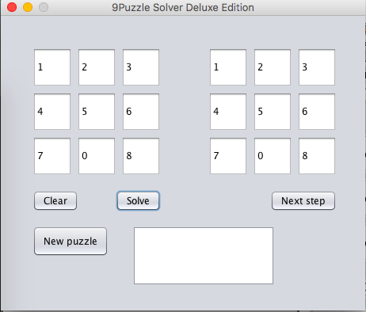
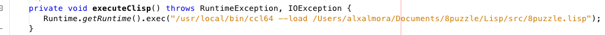

Pequeño programa para resolver 8-puzzles. Utilizando Common Lisp (CCL) y Java para el GUI.
El programa utiliza el algoritmo A*, para realizar busquedas. Usamos Una funcion Heuristica Costo(nodo) = Distancia_Manhattan(nodo) + nivel(nodo)
Tambien se programaron las siguientes funciones
Se utilizó Java para la realizacion de la GUI, con Java usando el Runtime actual, mandabamos un thread para correr el binario de CCL, el thread de Java lo ponemos a dormir por 5,000ms para darle tiempo a CCL de ejecutarse. Lo malo de llamar un Thread para el proceso de CCL es que no hay una forma de ver cuando existe un error y por lo tanto no podemos mandar algun error.
El programa no es eficiente en el numero de movimientos
Para la ejecucion de Java se necesita editar la siguiente funcion, ya que requiere rutas absolutas.
 Linea de codigo: 471 del Archivo MainGUI.javaRuntime.getRuntime().exec("/usr/local/bin/ccl64 --load /Users/alxalmora/Documents/8puzzle/Lisp/src/8puzzle.lisp");
Se comparte el código utilizado con licencia MIT en Github, el lenguaje utilizado fue Common Lisp (CL Clozure) que puede descargarse desde aquí